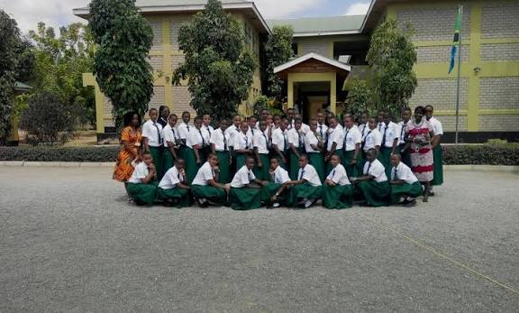
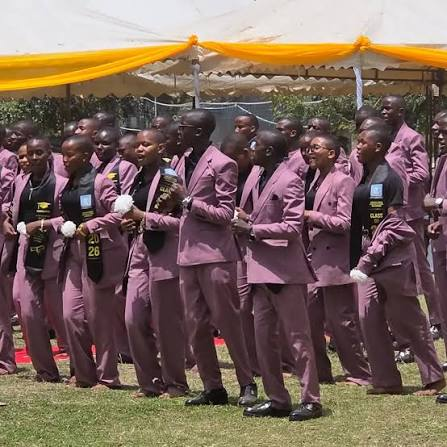

About Star High School
Owned and run by the Apostles of Jesus Missionaries, Mbuguni, Meru District

Our story and setting
Star High School is a co-educational boarding school in Mbuguni Ward, Meru District, on the lower plains of Mount Meru. It lies about 45 km from Arusha town on the Arusha–Mbuguni–Mirerani Road (P.O. Box 62, Duluti – Arusha).
The school is owned and run by the Apostles of Jesus Missionaries (AJ), who believe that education is empowerment: it gives young people the knowledge and character to shape their own futures and to serve others.
Every student at Star High School lives on campus. Lessons, prayer, sport and farm work are all part of the same day, and we want each graduate to leave ready to serve their family and their country.
S2421
Registered school
Registration number S2421.
2
Levels
O-Level and A-Level, boys and girls together.
10
A-Level combinations
Science, arts and business routes.
45 km
From Arusha town
On the Arusha–Mbuguni–Mirerani Road.
What we form in every student
Intellectual development
Careful teaching, supervised evening study and regular testing build strong knowledge and good study habits.
Moral and spiritual formation
Daily prayer, Mass and reflection teach honesty, respect, service and responsibility.
Physical development
Football, netball, athletics and practical work keep students healthy and teach teamwork and discipline.
A student's journey
Like the rings of a tree, every year adds a layer. Scroll to watch one grow.
Form I
Students join the school as boarders and begin the O-Level programme on the national curriculum.
day one, bags packedForm II
Studies continue across languages, mathematics, sciences, humanities and business subjects.
Form III
Students build on their foundation, with sport, faith and farm work alongside the classroom.
Form IV
The final year of O-Level, where students complete the programme.
the last O-Level yearForm V
Students who continue to A-Level join one of ten combinations, in three groups.
pick a pathForm VI
Students continue with their chosen combination to complete A-Level.
Graduation
Each graduating class leaves with a ceremony and the school motto: education is empowerment.

Faith in daily life
Prayer and worship are part of the school day. Students gather for Mass and reflection, and learn that character matters as much as grades.
Graduation
Each graduating class leaves Star with a ceremony, a stole and the school's motto: education is empowerment.

Our Team
The teachers, matrons and staff who guide every student at Star High School.